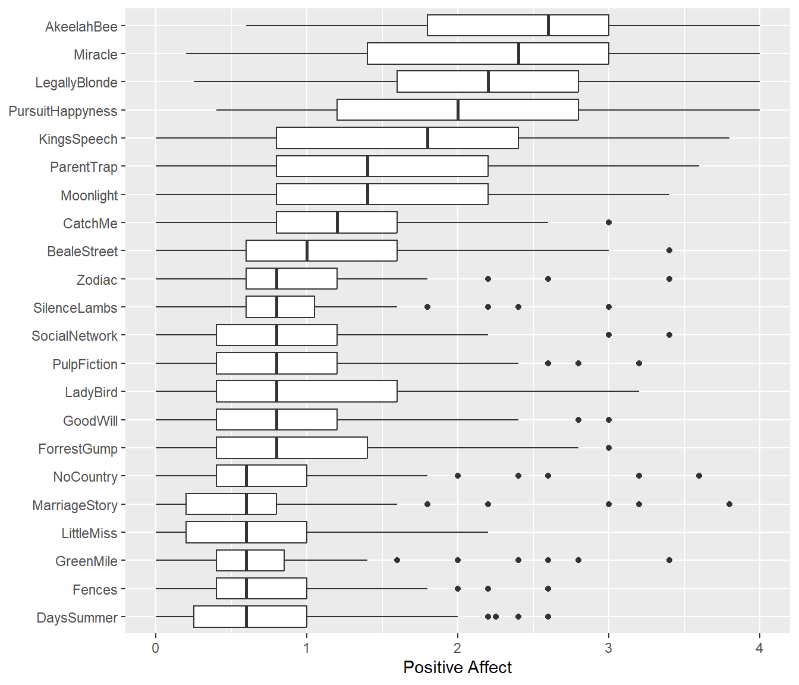
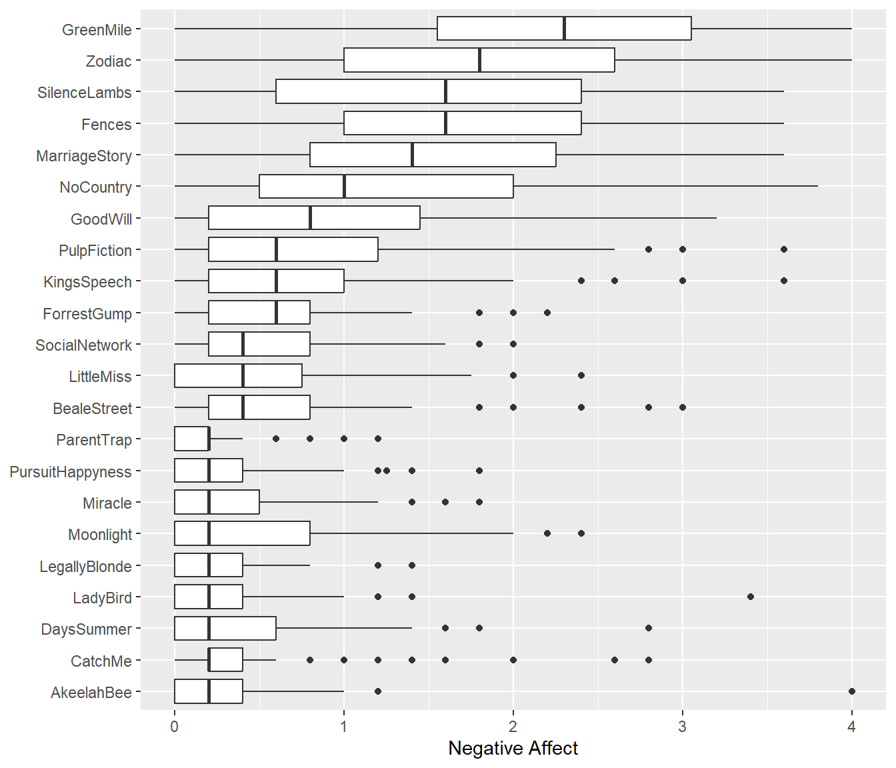

Database Overview
Clip Information
The database currently includes 22 video clips, each drawn from a different English-language film and ranging from 130 to 425 seconds in duration (Mdn=238, MAD=96.4). The figure below shows the distribution of the clips’ durations. The table below presents each clip’s abbreviation, source film title (and release year), as well as starting and stopping timestamp in HH:MM:SS format, and duration in seconds.

| Abbrev | Film | Clip_Start | Clip_Stop | Duration |
|---|---|---|---|---|
| AkeelahBee | Akeelah and the Bee (2006) | 01:42:23 | 01:45:07 | 164 |
| BealeStreet | If Beale Street Could Talk (2018) | NA | NA | 162 |
| CatchMe | Catch Me If You Can (2002) | NA | NA | 274 |
| DaysSummer | 500 Days of Summer (2009) | NA | NA | 132 |
| Fences | Fences (2016) | NA | NA | 134 |
| ForrestGump | Forrest Gump (1994) | NA | NA | 218 |
| GoodWill | Good Will Hunting (1997) | NA | NA | 150 |
| GreenMile | The Green Mile (1999) | NA | NA | 239 |
| KingsSpeech | The King's Speech (2010) | NA | NA | 425 |
| LadyBird | Lady Bird (2017) | NA | NA | 232 |
| LegallyBlonde | Legally Blonde (2001) | NA | NA | 414 |
| LittleMiss | Little Miss Sunshine (2006) | NA | NA | 130 |
| MarriageStory | Marriage Story (2019) | NA | NA | 240 |
| Miracle | Miracle (2004) | NA | NA | 341 |
| Moonlight | Moonlight (2016) | NA | NA | 234 |
| NoCountry | No Country for Old Men (2007) | NA | NA | 262 |
| ParentTrap | The Parent Trap (1998) | NA | NA | 425 |
| PulpFiction | Pulp Fiction (1994) | NA | NA | 233 |
| PursuitHappyness | The Pursuit of Happyness (2006) | NA | NA | 237 |
| Silence | Silence (2016) | NA | NA | 274 |
| SocialNetwork | The Social Network (2010) | NA | NA | 294 |
| Zodiac | Zodiac (2007) | NA | NA | 315 |
Valence Ratings
Each clip was continuously rated on its emotional valence at a frequency of 1 Hz and using a scale ranging from -4 (very negative) to 4 (very positive). The number of participants rating each clip ranged from 27 to 36 (Mdn=30, MAD=1.5). The table below provides the number of raters and duration per clip as well as a summary of the valence ratings distribution across raters (i.e., mean, standard deviation, and quartiles).


| Abbrev | Raters | Mean | SD | p0 | p25 | p50 | p75 | p100 |
|---|---|---|---|---|---|---|---|---|
| AkeelahBee | 33 | 1.66 | 1.52 | -2.03 | 0.40 | 1.60 | 2.81 | 4.00 |
| BealeStreet | 30 | 0.57 | 1.35 | -4.00 | -0.20 | 0.55 | 1.42 | 4.00 |
| CatchMe | 36 | 0.33 | 1.45 | -3.20 | -0.80 | 0.44 | 1.40 | 4.00 |
| DaysSummer | 31 | 0.38 | 1.25 | -3.40 | -0.40 | 0.35 | 1.20 | 3.60 |
| Fences | 30 | -2.09 | 1.39 | -4.00 | -3.22 | -2.28 | -1.02 | 2.00 |
| ForrestGump | 32 | -0.44 | 1.61 | -4.00 | -1.60 | -0.60 | 0.81 | 4.00 |
| GoodWill | 29 | 0.12 | 1.50 | -4.00 | -0.75 | 0.23 | 1.01 | 4.00 |
| GreenMile | 30 | -2.71 | 1.42 | -4.00 | -4.00 | -3.19 | -2.14 | 3.00 |
| KingsSpeech | 29 | 0.77 | 1.75 | -4.00 | -0.60 | 0.99 | 2.09 | 4.00 |
| LadyBird | 29 | 0.23 | 1.44 | -4.00 | -0.80 | 0.00 | 1.12 | 4.00 |
| LegallyBlonde | 30 | 1.33 | 1.35 | -3.10 | 0.46 | 1.38 | 2.25 | 4.00 |
| LittleMiss | 29 | -0.17 | 1.50 | -4.00 | -1.11 | -0.24 | 0.77 | 4.00 |
| MarriageStory | 29 | -1.97 | 1.76 | -4.00 | -3.36 | -2.35 | -1.00 | 4.00 |
| Miracle | 30 | 1.16 | 1.57 | -2.15 | 0.00 | 1.03 | 2.55 | 4.00 |
| Moonlight | 30 | 1.41 | 1.27 | -1.80 | 0.40 | 1.20 | 2.40 | 4.00 |
| NoCountry | 29 | -1.08 | 1.35 | -4.00 | -2.04 | -1.17 | -0.33 | 4.00 |
| ParentTrap | 33 | 2.06 | 1.28 | -2.41 | 1.20 | 2.20 | 3.00 | 4.00 |
| PulpFiction | 32 | 0.44 | 1.38 | -2.80 | -0.60 | 0.40 | 1.36 | 4.00 |
| PursuitHappyness | 32 | 1.50 | 1.52 | -2.91 | 0.43 | 1.52 | 2.72 | 4.00 |
| Silence | 31 | -1.14 | 1.42 | -4.00 | -2.16 | -1.04 | -0.02 | 3.20 |
| SocialNetwork | 27 | -0.33 | 1.79 | -4.00 | -1.70 | -0.40 | 1.13 | 4.00 |
| Zodiac | 29 | -0.75 | 1.58 | -4.00 | -1.96 | -0.60 | 0.20 | 3.80 |

Examine distribution of ratings per video (across seconds and raters)